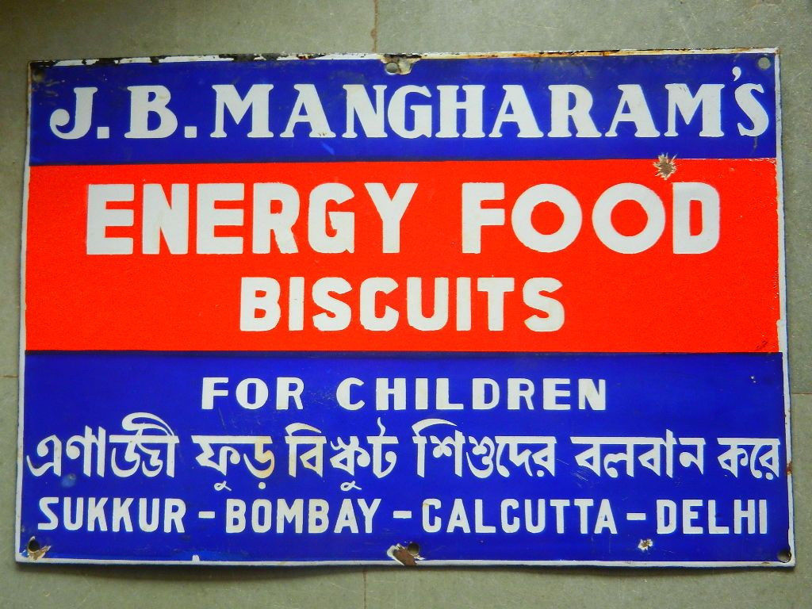
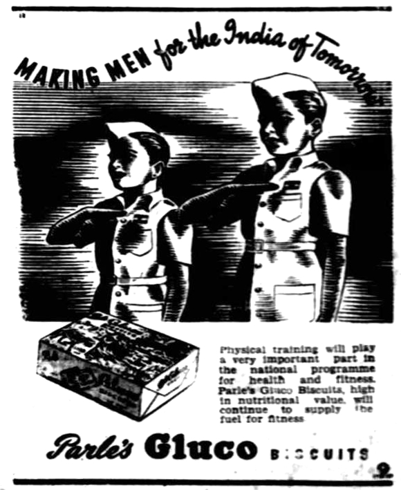

The Old Shelf / India / Old ads
Enamel sign and a 1947 ad
India
Old ads
1930s–40s and 1947
Photographs of real advertisements. Trademarks stay inside the pictures.
Stills only.

Porcelain sign for J.B. Mangharam's Energy Food Biscuits. Commons calls it a vintage sign from the 1930s or 1940s. Cities printed on it: Sukkur, Bombay, Calcutta, Delhi. Not a film poster.
Unknown, 1940s. Public domain. Source page


A 1947 print advertisement for Parle Gluco biscuits, as filed on Commons. It is a magazine-style ad, not a film poster, and the lettering is the ad itself.
Parle Gluco (as named on the file). Public domain. Source page